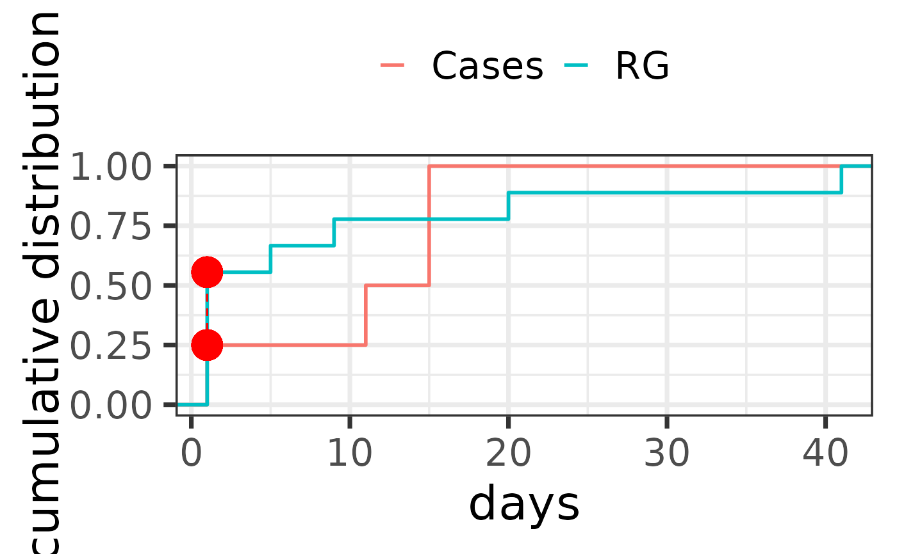

This function generates a KS plot for comparing two distributions using the Kolmogorov-Smirnov statistic.
Details
The function takes the results of a time-to-event analysis and compares two distributions based on the specified type of data (drug or event). It uses the ggplot2 package to create a KS plot, highlighting the points of greatest distance between the cumulative distribution functions (CDFs) of the two groups.
Examples
df <- time_to_onset_analysis(
drug_selected = "skin care",
reac_selected = list("skin affection" = list(
"dry skin",
"skin burning sensation",
"skin irritation",
"erythema",
"rash macular",
"acne",
"skin haemorrhage"
)),
temp_drug = sample_Drug, temp_reac = sample_Reac,
temp_ther = sample_Ther
)
plot_KS(df, RG = "event")
